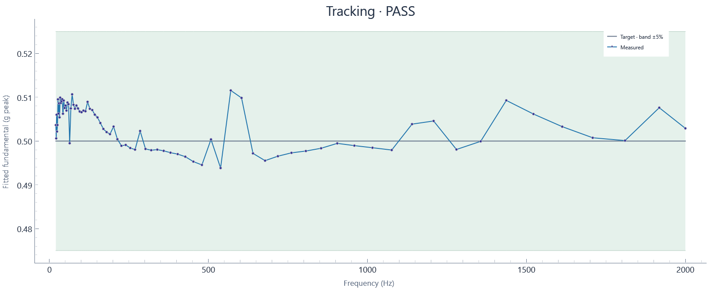

2026-10-30T10:03:54.329834-04:00 · Hardware · Setup fe982193ff11
Run: complete · 407 blocks · 407.39 wall seconds · 407.00 sample seconds
Tracking tolerance: ±5%

| Hz | Target g peak | Settled g peak | Error % | Raw transient peak g | Result |
|---|---|---|---|---|---|
| 20 | 0.5 | 0.50365 | +0.730 | 0.53871 | PASS |
| 21.189 | 0.5 | 0.5006 | +0.121 | 0.59058 | PASS |
| 22.449 | 0.5 | 0.50601 | +1.202 | 0.58515 | PASS |
| 23.784 | 0.5 | 0.50217 | +0.435 | 0.59453 | PASS |
| 25.198 | 0.5 | 0.50366 | +0.733 | 0.58848 | PASS |
| 26.697 | 0.5 | 0.50952 | +1.904 | 0.61293 | PASS |
| 28.284 | 0.5 | 0.50628 | +1.256 | 0.59256 | PASS |
| 29.966 | 0.5 | 0.50861 | +1.723 | 0.58712 | PASS |
| 31.748 | 0.5 | 0.50542 | +1.083 | 0.60046 | PASS |
| 33.636 | 0.5 | 0.50992 | +1.984 | 0.58292 | PASS |
| 35.636 | 0.5 | 0.50871 | +1.742 | 0.5886 | PASS |
| 37.755 | 0.5 | 0.5091 | +1.819 | 0.58749 | PASS |
| 40 | 0.5 | 0.50956 | +1.912 | 0.61565 | PASS |
| 42.379 | 0.5 | 0.50624 | +1.247 | 0.58404 | PASS |
| 44.898 | 0.5 | 0.50925 | +1.849 | 0.58082 | PASS |
| 47.568 | 0.5 | 0.50755 | +1.510 | 0.58613 | PASS |
| 50.397 | 0.5 | 0.5081 | +1.620 | 0.59256 | PASS |
| 53.394 | 0.5 | 0.50696 | +1.391 | 0.58206 | PASS |
| 56.569 | 0.5 | 0.5088 | +1.760 | 0.58119 | PASS |
| 59.932 | 0.5 | 0.50842 | +1.683 | 0.57193 | PASS |
| 63.496 | 0.5 | 0.4995 | -0.099 | 0.55007 | PASS |
| 67.272 | 0.5 | 0.50746 | +1.491 | 0.57811 | PASS |
| 71.272 | 0.5 | 0.51067 | +2.134 | 0.58712 | PASS |
| 75.51 | 0.5 | 0.50829 | +1.657 | 0.5786 | PASS |
| 80 | 0.5 | 0.50737 | +1.473 | 0.58045 | PASS |
| 84.757 | 0.5 | 0.50812 | +1.624 | 0.58428 | PASS |
| 89.797 | 0.5 | 0.50745 | +1.489 | 0.57193 | PASS |
| 95.137 | 0.5 | 0.50673 | +1.347 | 0.5723 | PASS |
| 100.79 | 0.5 | 0.50658 | +1.317 | 0.57144 | PASS |
| 106.79 | 0.5 | 0.50696 | +1.392 | 0.56872 | PASS |
| 113.14 | 0.5 | 0.50681 | +1.362 | 0.57156 | PASS |
| 119.86 | 0.5 | 0.50895 | +1.789 | 0.56082 | PASS |
| 126.99 | 0.5 | 0.50736 | +1.473 | 0.56304 | PASS |
| 134.54 | 0.5 | 0.50708 | +1.415 | 0.55452 | PASS |
| 142.54 | 0.5 | 0.50603 | +1.205 | 0.55761 | PASS |
| 151.02 | 0.5 | 0.5054 | +1.080 | 0.54822 | PASS |
| 160 | 0.5 | 0.50412 | +0.823 | 0.54896 | PASS |
| 169.51 | 0.5 | 0.50278 | +0.555 | 0.54946 | PASS |
| 179.59 | 0.5 | 0.50205 | +0.410 | 0.54328 | PASS |
| 190.27 | 0.5 | 0.50158 | +0.317 | 0.5455 | PASS |
| 201.59 | 0.5 | 0.5033 | +0.661 | 0.55131 | PASS |
| 213.57 | 0.5 | 0.50043 | +0.086 | 0.54501 | PASS |
| 226.27 | 0.5 | 0.49892 | -0.217 | 0.54056 | PASS |
| 239.73 | 0.5 | 0.49911 | -0.177 | 0.53772 | PASS |
| 253.98 | 0.5 | 0.49841 | -0.318 | 0.54032 | PASS |
| 269.09 | 0.5 | 0.49805 | -0.390 | 0.53896 | PASS |
| 285.09 | 0.5 | 0.5023 | +0.459 | 0.54155 | PASS |
| 302.04 | 0.5 | 0.4982 | -0.360 | 0.53809 | PASS |
| 320 | 0.5 | 0.49791 | -0.418 | 0.53649 | PASS |
| 339.03 | 0.5 | 0.49805 | -0.391 | 0.53797 | PASS |
| 359.19 | 0.5 | 0.49776 | -0.447 | 0.53871 | PASS |
| 380.55 | 0.5 | 0.49735 | -0.530 | 0.53562 | PASS |
| 403.17 | 0.5 | 0.49702 | -0.596 | 0.53365 | PASS |
| 427.15 | 0.5 | 0.49643 | -0.714 | 0.53834 | PASS |
| 452.55 | 0.5 | 0.49531 | -0.939 | 0.53303 | PASS |
| 479.46 | 0.5 | 0.49455 | -1.090 | 0.54155 | PASS |
| 507.97 | 0.5 | 0.50037 | +0.075 | 0.53649 | PASS |
| 538.17 | 0.5 | 0.49384 | -1.231 | 0.53809 | PASS |
| 570.18 | 0.5 | 0.51155 | +2.310 | 0.63121 | PASS |
| 604.08 | 0.5 | 0.50984 | +1.968 | 0.61108 | PASS |
| 640 | 0.5 | 0.49719 | -0.562 | 0.54056 | PASS |
| 678.06 | 0.5 | 0.49553 | -0.895 | 0.54044 | PASS |
| 718.38 | 0.5 | 0.49654 | -0.691 | 0.53501 | PASS |
| 761.09 | 0.5 | 0.49731 | -0.538 | 0.53797 | PASS |
| 806.35 | 0.5 | 0.49772 | -0.456 | 0.57576 | PASS |
| 854.3 | 0.5 | 0.49835 | -0.329 | 0.53846 | PASS |
| 905.1 | 0.5 | 0.49947 | -0.106 | 0.53698 | PASS |
| 958.92 | 0.5 | 0.49896 | -0.208 | 0.54167 | PASS |
| 1015.9 | 0.5 | 0.49847 | -0.305 | 0.54167 | PASS |
| 1076.3 | 0.5 | 0.49795 | -0.410 | 0.54834 | PASS |
| 1140.4 | 0.5 | 0.50386 | +0.773 | 0.54896 | PASS |
| 1208.2 | 0.5 | 0.50458 | +0.916 | 0.54649 | PASS |
| 1280 | 0.5 | 0.49808 | -0.385 | 0.53192 | PASS |
| 1356.1 | 0.5 | 0.49993 | -0.013 | 0.53797 | PASS |
| 1436.8 | 0.5 | 0.50928 | +1.856 | 0.56057 | PASS |
| 1522.2 | 0.5 | 0.50617 | +1.234 | 0.54118 | PASS |
| 1612.7 | 0.5 | 0.50329 | +0.657 | 0.55118 | PASS |
| 1708.6 | 0.5 | 0.50075 | +0.150 | 0.53797 | PASS |
| 1810.2 | 0.5 | 0.50011 | +0.021 | 0.54489 | PASS |
| 1917.8 | 0.5 | 0.50762 | +1.523 | 0.55514 | PASS |
| 2000 | 0.5 | 0.5029 | +0.580 | 0.54143 | PASS |
Tracking assessment against configured tolerance, separate from run completion. Sine uses the last settling-window blocks at each dwell; transient raw peaks are reported separately. Random excludes startup/ramp and the initial settling interval; all subsequent full-target blocks are evaluated.
Raw peak means the largest absolute acquired sample; it differs from fitted sine amplitude and RMS.
Calibration: 2026-10-29 current shaker/amp/load; NI USB-4431 Dev1 ai0, 10 mV/g, 2.1 mA IEPE. Last-block tone fit at 0.5 g-peak nominal from 02b82812; revalidate after setup changes.
Input: Dev1/ai0: Acceleration input in g (2.1 mA IEPE)
Clocks: Independent AI/AO clocks configured